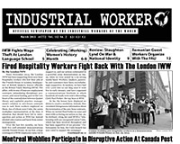
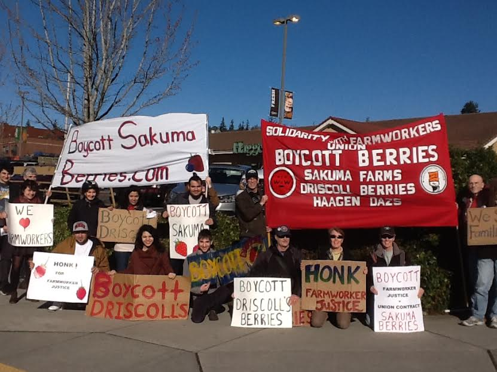

Submitted on Thu, 03/05/2015 - 1:55pm
Why a D.C. bike shop is joining a radical socialist union: The staff of Capitol Hill Bikes organized in solidarity with the hard-fought campaign at Capital Bikeshare.
By Lydia DePillis, Washington Post
Original story: http://www.washingtonpost.com/blogs/wonkblog/wp/2015/03/05/why-a-d-c-bike-shop-is-joining-a-radical-socialist-union/
 Call it copycat unionism: Sometimes one workplace’s organizing efforts spread to another.
Call it copycat unionism: Sometimes one workplace’s organizing efforts spread to another.
That at least seems to be what's happening at Capitol Hill Bikes, whose nine-person staff voted in January to form the District Bicycle Workers' Union after watching the struggles of Capital Bikeshare workers to do the same.
Submitted on Sun, 03/01/2015 - 1:15pm

Headlines:
- Fired Hospitality Workers Fight Back With The London IWW
- Montreal Wobblies Participate In Disruptive Action At Canada Post
- IWW Toronto Harm Reduction Workers Win Pay For Fired Organizer
Features:
- Why Incarcerated Workers Should Join The IWW
- Celebrating (Working) Women’s History Month
- Review: Staughton Lynd On War & National Identity
Download a Free PDF of this issue.
Submitted on Fri, 02/27/2015 - 10:56am
 Pro-Claimant Demo Gets Great Public Support in West Derby
Pro-Claimant Demo Gets Great Public Support in West Derby
By the Liverpool IWW
Members of Liverpool IWW joined around a dozen activists, including people from the benefits advice group Reclaim, outside West Derby job centre on Eaton Road this lunchtime. This was part of a national day of action in solidarity with Scottish Unemployed Workers Network activist Tony Cox. Tony was arrested on 29th January after Arbroath job centre management called police to stop him representing a vulnerable jobseeker. We protested to drive home the message that ‘advocacy is not a crime’, and aiming to build towards smashing sanctions against unemployed workers.
Submitted on Sun, 02/22/2015 - 5:52pm
By X331980, The Sakuma Brothers Farms, Inc. berry boycott campaign spread to yet another grocery store in Bellingham, Wash. on Feb. 21. A large group of Wobs and friends picketed a Haggen Foods grocery store on behalf of the Familias Unidas por la Justicia farm workers union. This was the first of these boycott pickets organized by the Whatcom-Skagit IWW, and it drew a good crowd. A large, bright red “Boycott Berries” banner attracted attention from the busy street in front of the store. Other picketed on the busy street corner two blocks down. Some pickets held signs supporting the nationwide boycott of Driscoll’s berries and Häagen-Dazs ice cream, large purchasers of berries grown at Sakuma Farms in Burlington, Wash. Some signs urged drivers to “honk your support farm worker justice” and drivers did. Others leafleted customers entering the parking lot with information about the boycott.
Submitted on Wed, 02/18/2015 - 11:23am
 Laval -- On the morning of Monday, February 16, 2015, the IWW Montreal, the Student Workers Union of the University of Quebec at Montreal, as well as several other citizens, took part in the disruption of a Canada Post distribution center in Laval, Quebec.
Laval -- On the morning of Monday, February 16, 2015, the IWW Montreal, the Student Workers Union of the University of Quebec at Montreal, as well as several other citizens, took part in the disruption of a Canada Post distribution center in Laval, Quebec.
This action in solidarity with postal workers is set in a current context of struggles against austerity, and in the scope of the campaign for a social strike on May 1st 2015.
Today, many workers are directly confronted with the effects of budget cuts to health services, to municipal employees, to firemen and firewomen, to postal workers, to students, to workers in the private sector...
Yet, resistance is organizing itself everywhere. We will not let different governments (whether conservative or liberal) and the bosses impose their anti-social measures on us. The time of a minority enriching itself on the back of an impoverished majority is finished.